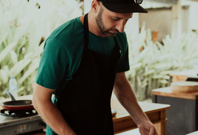

About Marco Rossi

I was born and raised in the heart of Tuscany, where I discovered my passion for cooking at a young age, inspired by my grandmother's traditional recipes and the rich flavors of Italian cuisine.
With over 20 years of experience in some of the world's most prestigious kitchens, I’ve honed my skills and developed a unique culinary style that blends classic Italian techniques with modern innovation.
My dedication to using only the finest, locally-sourced ingredients, along with my commitment to sustainability, has earned me numerous accolades and a loyal following of food enthusiasts around the world.
"Cooking is not just about ingredients; it's a way of making somebody feel loved." - Marco Rossi